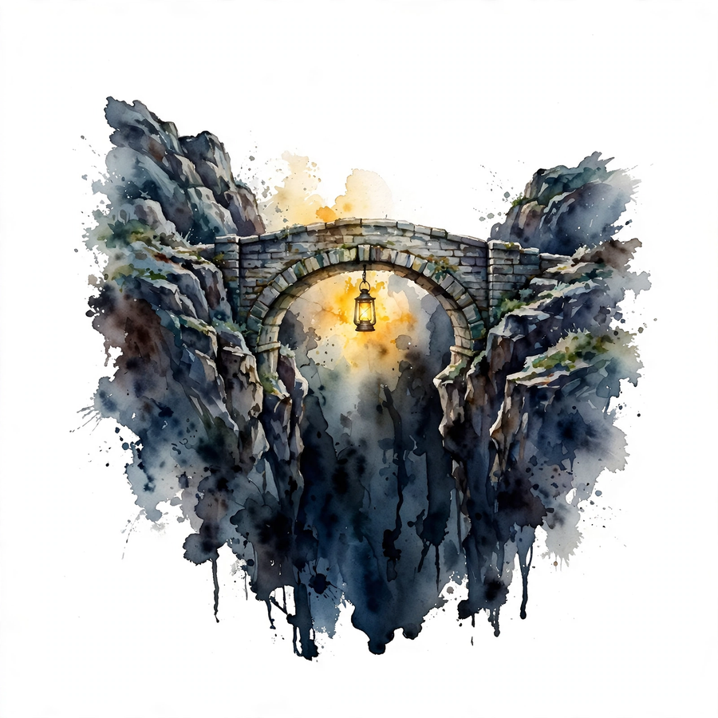

Unit 02 · Variational divergence minimization
One inequality, one family of rulers, one dual, and two biased coins that carry every number: p says heads with 0.7, q says 0.4.
From the lesson The idea, and every number beside it, comes from the cited section of content/v2/math-genai/lessons/u02/lesson-02-variational-divergence-minimization.md. The phrasing is the companion's. No lecture transcript exists for this unit.
Illustration Invented by the companion: an analogy, a toy with made-up values, or a what-if. Never lecture content.
companion The idea above the tag carries a lesson anchor. The generalization below it is the companion's own voice.
Narrated from the lesson content. The lesson is locally authored bridge material. It states that it does not reproduce the instructor lectures, and no transcript was inspected. All numbers below were computed in the lesson on 2026-10-06 (numpy 1.26.4, float64, seed 0 where RNG is used). Log base 2, in bits, unless stated.
Watch the lecture
Official lecture video: W1L4: Variational divergence minimization (YouTube).

The running toy for the whole unit: two biased coins. From the lesson C01-C12 p is the data-side coin with P(heads) = 0.7. q is the model-side coin with P(heads) = 0.4. Outcomes are 0 (tails) and 1 (heads). Every section below uses these same two coins. The lesson computes every number on 2026-10-06 in float64, log base 2, seed 0 where random draws appear.
The arc of the unit: Jensen inequality gives a lower bound on scores we cannot sum (C01-C03). Density ratios let us compare distributions from samples alone (C04). Five divergences turn out to be one family (C05), and the family has a dual that needs only samples (C06-C07). Monte Carlo prices the estimates (C08), gradients climb the dual (C09), and three named gaps plus four assumptions decide what can go wrong (C10-C11).
Take f(x) = x squared. X takes 0.4 or 0.7 with probability 1/2 each. From the lesson C01 Two orders: first average, then apply f: E[X] = 0.55, f(E[X]) = 0.3025. Or apply f first, then average: f(0.4) = 0.16, f(0.7) = 0.49, E[f(X)] = 0.325. The gap is 0.325 − 0.3025 = 0.0225. The square bends upward, so the average of the heights sits above the height of the average.
The direction is not fixed. From the lesson C01 For f(x) = sqrt(x) (concave) the same X gives 0.7416 against 0.7346: the order flips. For f(x) = x^3 − 3x (neither convex nor concave) on {−2, 1} with equal weight, f(E) = 1.375 and E[f] = −2.0. The property that decides is convexity: f is convex when every chord between two points on its graph lies above the graph. Jensen: for convex f, f(E[X]) ≤ E[f(X)]. The conditions are plain: f convex on the range of X, and both expectations finite. That is all.
The true posterior p(z | x) over a latent z can be any distribution. The space of all distributions has no finite description. From the lesson C02 The lesson move: pick a small family instead. All Bernoulli distributions, or all Gaussians with diagonal covariance. Call it Q. Search inside Q only. The buy: a finite parameter vector phi to optimize. The cost: the best member of Q may still miss the target. That miss is the approximation gap (C10).
| Choice | Parameters | Can it hit any target? |
|---|---|---|
| Bernoulli(r) | 1 | no |
| Gaussian diagonal, d = 100 | 200 | no |
| all densities | infinite | yes, in principle |
The lesson example: the family Bernoulli(r) with r in [0, 1] has one parameter. From the lesson C02 Against a 50/50 mixture of Bernoulli(0.1) and Bernoulli(0.9), the best r is 0.5 and the two-hump shape is lost. The optimizer reports convergence to the best member while the target is missed.
Bench. Move r and watch the Bernoulli(r) table. Illustration The family is the lesson family from C02. Any r gives a valid two-outcome table.
q_phi = [0.60, 0.40] for outcomes [tails, heads]
A latent coin toy: z in {A, B} is hidden, x = heads is observed. From the lesson C03 Prior p(z) = [0.5, 0.5]. Likelihood p(heads | A) = 0.9, p(heads | B) = 0.1. The marginal is p(heads) = 0.5 × 0.9 + 0.5 × 0.1 = 0.5, so the log score is log2(0.5) = −1.0 bit. With two latent values the sum is easy. With a continuous z, or 2^100 latent states, the sum is impossible.
The derivation in one line. From the lesson C03 Write p(x) = sum over z of q(z) p(x, z)/q(z) for any helper distribution q. Then log p(x) = log E_q[p(x, z)/q(z)] ≥ E_q[log p(x, z) − log q(z)] by Jensen, since log is concave and the direction flips. The right side is the lower bound. It needs only expectations under q, no sum over all z. The gap between the bound and log p(x) equals D_KL(q(z) || p(z | x)): the bound is tight exactly when q matches the true posterior.
| Quantity | Value (bits) | Source |
|---|---|---|
| Bound at q(z) = [0.6, 0.4] | 0.6×log2(0.45/0.6) + 0.4×log2(0.05/0.4) = −1.4490 | C03 |
| Gap = KL([0.6,0.4] || [0.9,0.1]) | 0.4490 | C03 |
| Bound + gap | −1.4490 + 0.4490 = −1.0 = log p(x) | C03 |
The identity holds exactly: bound + gap reproduces log p(x) to 1e-12 in the lesson code. From the lesson C03 The failure case: q misses support where p(x, z) is positive. Then the ratio explodes and the bound goes to −infinity. The assumption is support coverage (C07).
The data side gives samples: heads, tails, heads. The model side gives samples: tails, tails, heads. From the lesson C04 No formula for p or q. We need the ratio r(x) = p(x)/q(x) at each outcome, because every divergence in this lesson is an expectation of a function of r. On the toy: r(1) = 0.7/0.4 = 1.75 and r(0) = 0.3/0.6 = 0.5. The first check of any ratio estimate: E_q[r] = 0.6 × 0.5 + 0.4 × 1.75 = 1.0. Ratios average to 1 under q, always.
The classifier route. From the lesson C04 Train a classifier to tell the two sample piles apart: samples from p labeled 1, from q labeled 0. The optimal classifier outputs d(x) = p(x)/(p(x) + q(x)). Then r(x) = d(x)/(1 − d(x)). On the toy a perfect classifier outputs d(1) = 0.7/1.1 = 0.6364 and d(0) = 0.3/0.9 = 0.3333, giving r(1) = 0.6364/0.3636 = 1.75 and r(0) = 0.3333/0.6667 = 0.5. Exact. No density needed.
Bench. Move the classifier output and read off the implied ratio. Illustration The rule r = d/(1 − d) is the lesson rule from C04.
Implied ratio r(heads) = 1.7473 · lesson truth: 1.75
The failure case: the classifier overfits. From the lesson C04 d(x) = 1 on every p sample and 0 on every q sample. Then r is 0 or infinite on training points and meaningless elsewhere. Regularize the classifier.
KL weights the log ratio by p. Reverse KL weights it by q. Jensen-Shannon mixes both. Total variation uses absolute difference. From the lesson C05 The one formula: pick a convex function f with f(1) = 0, and define D_f(p || q) = E_q[f(p(x)/q(x))]. The knob is f. Since f is convex and f(1) = 0, Jensen gives D_f ≥ f(E_q[r]) = f(1) = 0: every f-divergence is non-negative, and zero when p = q.
| Ruler | Generator f(t) | D_f on the toy (bits) |
|---|---|---|
| KL(p||q) | t log2 t | 0.2651 |
| reverse KL | −log2 t | 0.2771 |
| Jensen-Shannon | (t/2)log2(2t/(t+1)) + (1/2)log2(2/(t+1)) | 0.0667 |
| total variation | |t−1|/2 | 0.3000 |
| Hellinger squared | (sqrt(t)−1)^2 | 0.0932 |
The lesson marks this concept source-confirmed at the title level only: the playlist has a week titled f-Divergence, but no transcript was inspected, so the lesson makes no claim about which generators the lecture presents. From the lesson C05 The failure case: pick a non-convex f and D_f can go negative. The convexity check is mandatory.
D_f(p || q) = E_q[f(r)] needs the ratio at every x. We have samples, not densities. From the lesson C06 The variational dual: for convex f, D_f(p || q) = sup over T of E_p[T(x)] − E_q[f*(T(x))], where f* is the convex conjugate and T ranges over all functions. The primal optimizes over distributions (needs densities). The dual optimizes over functions (needs only samples: draw from p for the first term, from q for the second). The optimal witness satisfies T*(x) = f'(r(x)).
On the toy, in nats for a clean identity: From the lesson C06 r = [0.5, 1.75]. T* = ln r + 1 = [0.3069, 1.5596]. E_p[T*] = 0.3 × 0.3069 + 0.7 × 1.5596 = 1.1838. E_q[e^{T*−1}] = E_q[r] = 1.0. Dual = 0.1838 nats = 0.2651 bits. Exact: the dual recovers the truth.
| Role | Optimizes over | Needs | Toy value |
|---|---|---|---|
| primal | distributions | densities | 0.2651 bits |
| dual | functions T | samples only | 0.2651 bits |
The failure case: the T class is too weak. From the lesson C06 With T(x) = constant, the dual gives 0 for every pair of distributions. The estimate is 0, the truth is 0.2651. The gap is the approximation gap (C10).
Change the toy: q(heads) = 0.0, q(tails) = 1.0. The data side still flips heads 70 percent of the time. From the lesson C07 r(heads) = 0.7/0.0: division by zero. KL(p||q) = +infinity. The dual witness T*(heads) = ln(inf) + 1 = inf, and the objective explodes. The lesson asks: is infinite divergence a bug or a message? A message. Support mismatch means the model denies observed reality.
The repair: give every outcome epsilon mass. From the lesson C07 With epsilon = 0.01: KL = 0.7 × log2(0.7/0.01) + 0.3 × log2(0.3/0.99) = 4.2905 − 0.5167 = 3.774 bits. Finite, large, honest. But too much smoothing hides the failure: epsilon = 0.5 gives KL = 0.119 bits, which praises a model that denies 70 percent of the data.
| q(heads) | r(heads) | KL(p||q) bits |
|---|---|---|
| 0.4 | 1.75 | 0.2651 |
| 0.01 (smoothed) | 70.0 | 3.774 |
| 0.0 | undefined | +infinity |
E_q[r] = 1 exactly, but pretend the sum is impossible. From the lesson C08 Draw N samples from q, average r on the samples. Seed 0, numpy 1.26.4: N = 100 gives 0.9250 (error 0.0750), N = 1000 gives 0.9800 (error 0.0200), N = 10000 gives 1.0011 (error 0.0011). Ten times the samples does not give ten times the accuracy.
The law: the standard error is sigma / sqrt(N). From the lesson C08 Four times the samples halves the error. On the toy, sigma^2 = E_q[(r−1)^2] = 0.6 × 0.25 + 0.4 × 0.5625 = 0.375, sigma = 0.6124. Predicted SE: 0.0612 at N = 100, 0.0194 at N = 1000, 0.0061 at N = 10000. Measured errors: 0.0750, 0.0200, 0.0011. Same scale. Predict first, measure second.
Bench. Watch the 1/sqrt(N) law live. Illustration This toy draws from q with a fixed seed and averages r. The numbers differ from the lesson run (different RNG). The shrinkage law is the same.
Restrict the witness to lines: T(x) = a x + b on outcomes {0, 1}. From the lesson C09 The dual objective in nats is J(a, b) = E_p[T] − E_q[e^{T−1}]. Start at (a, b) = (1, 1). The analytic gradient: dJ/da = E_p[x] − E_q[x e^{T−1}] = 0.7 − 0.4 × e^1 = −0.3873. dJ/db = 1 − E_q[e^{T−1}] = 1 − (0.6 + 0.4 × e) = −0.6873. Both negative: decrease a and b. Finite differences with eps = 1e-6 give −0.3873 and −0.6873, matching to 1e-9.
| Partial | Analytic | Finite diff (eps 1e-6) | Match |
|---|---|---|---|
| dJ/da at (1, 1) | −0.3873 | −0.3873 | 1e-9 |
| dJ/db at (1, 1) | −0.6873 | −0.6873 | 1e-9 |
The condition that makes it legal: the gradient of an expectation is the expectation of the gradient, provided the integrand is smooth in the parameters. From the lesson C09 At a kink (ReLU witness) the derivative does not exist at the kink, and autodiff returns a subgradient silently. And the failure case: differentiate through a sampling step and miss the dependence of the distribution on the parameter. The reparameterization trick (U05) or the score function repairs it.
Bench. Climb J(a, b) from (1, 1) by gradient ascent. Illustration Lesson formulas, lesson start point, 40 steps at lr 0.5. Truth: 0.1838 nats.
J = −0.6873 nats at (a, b) = (1.000, 1.000). Step 0 of 40.
The exact dual over all functions equals the truth, 0.1838 nats. From the lesson C10 Restrict T to lines and maximize over an 81×81 grid: best value 0.1832 nats at (a, b) = (1.3, 0.3). The shortfall is 0.0006 nats. Make the witness class constants only: best dual = 0, gap = 0.1838. The gap is all in the class.
| Gap | Toy value (nats) | Shrinks with |
|---|---|---|
| approximation (lines) | 0.0006 | richer T class |
| approximation (constants) | 0.1838 | richer T class |
| estimation | sigma/sqrt(N) | more samples |
| optimization | grid/steps | better optimizer |
The diagnosis order: From the lesson C10 if a richer class does not move the number, the gap is not approximation. If more samples do not move it, it is not estimation. What remains is optimization. And the trap: the dual exceeds the truth on the empirical objective (finite samples, lucky draw). The empirical dual is not a lower bound. Report it with its SE.
Pipeline: draw N samples, pick a witness class, maximize the empirical dual, report the number. From the lesson C11 As N grows and the class grows, does the number converge to the true divergence? Only under four assumptions, each load-bearing.
| Assumption | Break it | Symptom |
|---|---|---|
| support: p inside q | q(heads) = 0 | infinite / undefined |
| integrability: expectations exist | heavy-tail ratio | wild, non-converging estimates |
| richness: class nears T* | constant T | stuck at 0 |
| optimization: maximizer found | 1 gradient step | shortfall, unknown size |
The constant-T demo is the cleanest break: From the lesson C11 the number stays 0 at every N while the truth is 0.2651 bits, forever. Samples do not fix a poor class. When the assumptions fail, the lesson offers honest reporting instead: this is the empirical dual on N samples with this class.
The Bernoulli pair cannot show a continuous integral, a high-dimensional ratio, or a heavy tail. From the lesson C12 It shows every discrete idea exactly. The ladder adds exactly one difficulty per rung.
| Rung | New difficulty | U02 idea it tests |
|---|---|---|
| Bernoulli pair | none (base) | all, exact |
| categorical K | K sums | f-divergence table |
| 1-D Gaussians | first integrals | closed-form KL |
| mixtures | multimodality | family miss (C02) |
| high-D | ratio estimation | classifier route (C04) |
The full toy ledger, recomputed 2026-10-06: From the lesson C12 ratios 0.5 and 1.75 with E_q[r] = 1.0. KL 0.2651, reverse KL 0.2771, JS 0.0667, TV 0.3, Hellinger squared 0.0932. Jensen gap on x squared: 0.0225. Dual at T*: 0.1838 nats. Best line dual: 0.1832 nats. MC SE at N = 1000: 0.0194. The FDE gate from the lesson: a divergence estimate with no SE and no support check is not shippable. Report the number, its SE, and the support verdict.
The lesson closes with a ledger. From the lesson Chapter plate Cost without the ideas: every divergence is its own formula, intractable scores stay intractable, and the claim that the model matches the data has no number. Cost with the ideas: one inequality (Jensen) that builds lower bounds, one family (f-divergence) that unifies five rulers, one dual that replaces densities with a function optimization, one ratio identity (E_q[r] = 1) that checks every estimate, and one error law (sigma/sqrt(N)) that prices every sample. The tradeoff in one line: variational methods trade exactness for tractability, and the three-gap ledger says exactly what was paid. Connection: GANs optimize a dual with a neural witness (U03). VAEs maximize the C03 bound (U05). Diffusion models chain such bounds across noise steps (U07).
Every lesson on this page, in order. Tap one to return to its chapter.